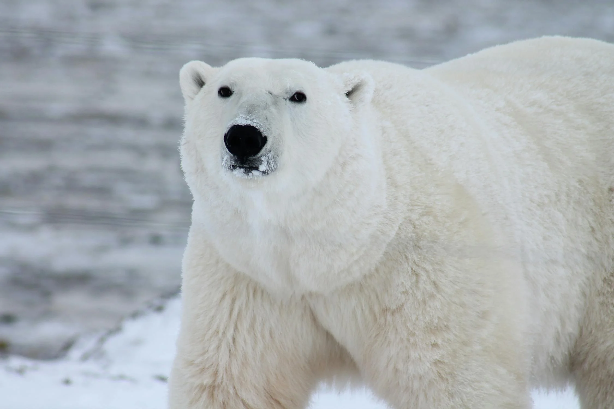

Life of a Polar Bear

The polar bear is a large bear native to the Arctic and nearby areas. It is closely related to the brown bear, and the two species can interbreed. The polar bear is the largest extant species of bear and land carnivore, with adult males weighing 300–800 kg. The species is sexually dimorphic, as adult females are much smaller. The polar bear is white- or yellowish-furred with black skin and a thick layer of fat. It is slenderer than the brown bear, with a narrower skull, longer neck, and lower shoulder hump. Its teeth are sharper and more adapted to cutting meat. The paws are large and allow the bear to walk on ice and paddle in the water. Polar bears are both terrestrial and ice-living and are considered marine mammals because of their dependence on marine ecosystems. They prefer the annual sea ice but live on land when the ice melts in the summer. They are mostly carnivorous and specialized for preying on seals, particularly ringed seals.
Facts About Polar Bears
- Polar bears have black skin beneath their dense, white fur, which helps them absorb heat from the sun.
- They are incredibly strong swimmers and can travel over 60 miles in freezing water without needing a break.
- These powerful predators rely on stable sea ice to hunt seals, which are their primary source of nutrition.
- Surprisingly, a polar bear's fur is transparent, not white, but it appears white by reflecting visible light.